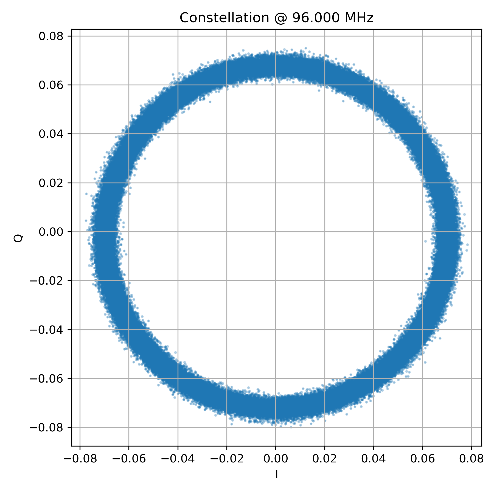
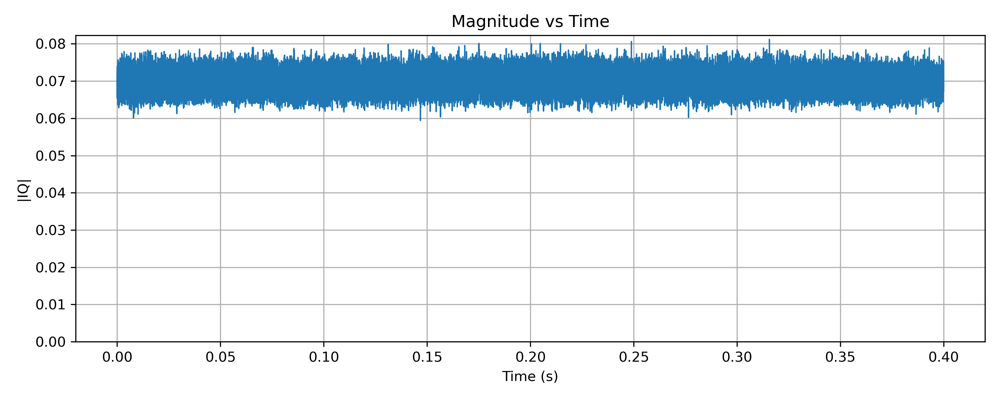
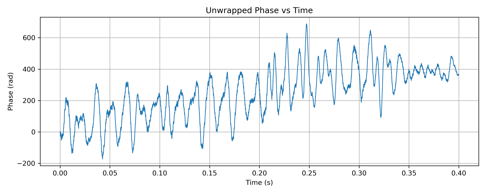
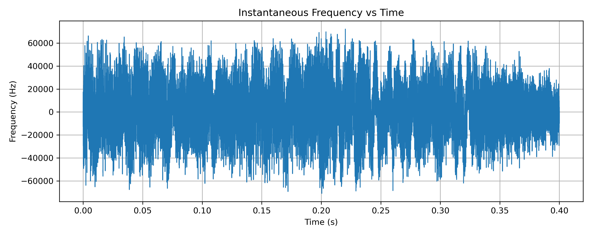
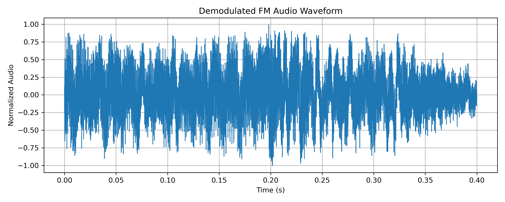

Seeing Broadcast FM in IQ Space
2026-01-05
Seeing Broadcast FM in IQ Space
Introduction
Modern software-defined radios (SDRs) do not deliver audio directly. Instead, they provide a stream of complex samples known as I and Q, which together describe the radio signal at baseband. This representation preserves both amplitude and phase, allowing software to examine, demodulate, or decode a wide range of signals long after they have been captured. In this series of posts, I’ll use raw IQ data to look at what familiar radio signals actually look like before demodulation.
Representing a signal as IQ turns the radio waveform into a rotating vector in the complex plane. For signals with a carrier, this rotation is not an error but a fundamental part of the signal’s structure. By plotting these IQ samples directly, we can build visual intuition for how different modulations work, what changes, what stays the same, and where the information really lives.
This post is the first in a short series exploring what different radio signals look like in IQ space. It begins with broadcast FM, moves on to narrowband FM and airband AM, and finishes with DAB, where the limits of time-domain IQ visualisation become clear. In the future I may add posts around digital modes as IQ plots are especially good at investigating modulation patterns
Broadcast FM in IQ Space
Broadcast FM is a good place to start because it produces one of the cleanest and most recognisable patterns in IQ space. A broadcast FM signal consists of a strong carrier whose frequency is varied by the audio, while its amplitude remains largely constant.
When viewed as IQ samples, this carrier appears as a rotating vector in the complex plane. If the receiver is tuned exactly to the centre frequency, the carrier rotates at a steady rate. Any frequency offset between the transmitter and receiver simply changes how fast this rotation appears.
IQ constellation: the rotating carrier
Load and plot raw IQ
import numpy as np
import matplotlib.pyplot as plt
from iq_io import load_iq
# Load IQ
iq, fs, fc = load_iq("iq_capture.npz")
iq = iq[1000:] # drop initial transient
N = min(len(iq), 200000)
iq_seg = iq[:N]
# Plot constellation
plt.figure(figsize=(6,6))
plt.scatter(iq_seg.real, iq_seg.imag, s=2, alpha=0.3)
plt.xlabel("I")
plt.ylabel("Q")
plt.title(f"Constellation @ {fc/1e6:.3f} MHz")
plt.axis("equal")
plt.grid(True)
plt.show()
Plotting a short segment of raw IQ samples (Figure 1) produces a near-perfect circle. This circle is the carrier rotating in the complex plane. Unlike AM, the radius remains almost constant — the signal does not expand and contract with the audio.
What does change is the angular velocity. As the transmitted audio modulates the carrier frequency, the rotation speeds up and slows down. In a static scatter plot this motion is not visible, but it becomes obvious when time ordering is preserved.
In FM, information is carried in how fast the vector rotates, not how far it is from the origin.
Dynamic IQ: rotation over time
Animate IQ (GIF)
import matplotlib.pyplot as plt
from matplotlib.animation import FuncAnimation
fig, ax = plt.subplots(figsize=(5,5))
ax.set_xlabel('I')
ax.set_ylabel('Q')
ax.set_title('Dynamic IQ Plot (GIF)')
ax.set_xlim(-0.05, 0.05)
ax.set_ylim(-0.05, 0.05)
scatter = ax.scatter([], [])
def update(frame):
scatter.set_offsets(np.column_stack((iq_seg.real[:frame], iq_seg.imag[:frame])))
return scatter,
ani = FuncAnimation(fig, update, frames=500, blit=True)
ani.save("dynamic_iq.gif", dpi=80)
Animating the IQ samples (Figure 2) makes the underlying motion much clearer. The points trace out a rotating path, with the rotation rate continuously changing as the audio varies. Silence, speech, and music all appear as subtle changes in rotational behaviour rather than changes in size.
This animation does more than any single static plot to build intuition for what FM “is doing”.
Magnitude vs Time: what FM does not use
Plot magnitude vs time
import matplotlib.pyplot as plt
t = np.arange(len(iq_seg)) / fs
mag = np.abs(iq_seg)
plt.figure(figsize=(10,4))
plt.plot(t, mag, linewidth=1)
plt.xlabel("Time (s)")
plt.ylabel("|IQ|")
plt.title("Magnitude vs Time")
plt.grid(True)
plt.show()
Plotting the magnitude of the IQ samples over time (Figure 3) shows a nearly constant level. This confirms that the amplitude of the signal is not being used to carry information. Any small variations are due to noise, multipath, or receiver effects rather than the modulation itself.
This plot is a useful contrast with AM, where the magnitude directly follows the audio waveform.
Phase and instantaneous frequency
Phase and instantaneous frequency
# Unwrapping Phase
phase = np.angle(iq_seg)
phase_unwrapped = np.unwrap(phase)
# Instantaneous frequency
inst_freq = np.diff(phase_unwrapped) * fs / (2*np.pi)
t_freq = t[1:]
plt.figure(figsize=(10,4))
plt.plot(t_freq, inst_freq)
plt.xlabel("Time (s)")
plt.ylabel("Frequency (Hz)")
plt.title("Instantaneous Frequency vs Time")
plt.grid(True)
plt.show()
If the phase of the IQ samples is unwrapped and plotted against time (Figure 4), it appears as a steadily increasing line. The slope of this line corresponds to frequency. When audio is present, the slope changes continuously, this is frequency modulation made visible.
While this plot is mathematically important, it is not always easy to interpret visually. For that reason, it is often more intuitive to plot instantaneous frequency, derived from the difference between successive phase samples.
Instantaneous frequency: audio revealed

When instantaneous frequency is plotted (Figure 5), the audio content becomes immediately visible. Speech and music appear directly as deviations around the centre frequency. This plot makes explicit what FM is doing: audio is mapped onto frequency deviation.
Although this step already involves a small amount of processing, it remains very close to the raw signal and provides a clear bridge between the abstract idea of phase and the familiar concept of audio.
Demodulated audio
FM demodulated audio
from scipy.signal import butter, filtfilt
# Low-pass filter for audio
fs_audio_cut = 15e3
b, a = butter(5, 15e3/(fs/2), btype='low')
audio = filtfilt(b, a, inst_freq)
# Normalize and plot
audio /= max(abs(audio))
plt.figure(figsize=(10,4))
plt.plot(t_freq, audio, linewidth=1)
plt.xlabel("Time (s)")
plt.ylabel("Normalized Audio")
plt.title("Demodulated FM Audio Waveform")
plt.grid(True)
plt.show()
For completeness, the FM signal can of course be demodulated into audio (Figure 6). The resulting waveform confirms what we have already inferred from the instantaneous frequency plot.
In this series, demodulated audio is included only as a reference. The focus is on understanding the signal before demodulation, using the structure already present in the IQ data.
Audio-synchronised animation
As a final illustration, the IQ animation can be synchronised with the recovered audio (Figure 7). Hearing the audio while watching the rotation speed change reinforces the connection between sound and frequency deviation.
The audio-synchronised MP4 is included solely to illustrate how audio maps onto frequency deviation in broadcast FM. It uses a short off-air capture for technical demonstration, not for redistribution or listening.
What broadcast FM teaches us
Broadcast FM establishes three ideas that will carry through the rest of this series:
- IQ represents a rotating vector, not a static point
- A visible carrier produces rotation
- Different modulations encode information in different aspects of that rotation
GitHub Link to code used to create these plots
For complete reproducible scripts, including capture, plotting, and video generation, see the GitHub repository. The link is currently here as a placeholder but code will be added shortly
Next Time…
In the next post, we’ll look at an FM repeater signal and see how the same underlying geometry appears in a more dynamic, real-world setting , with silence, speech, and key-up transients all visible in IQ space.